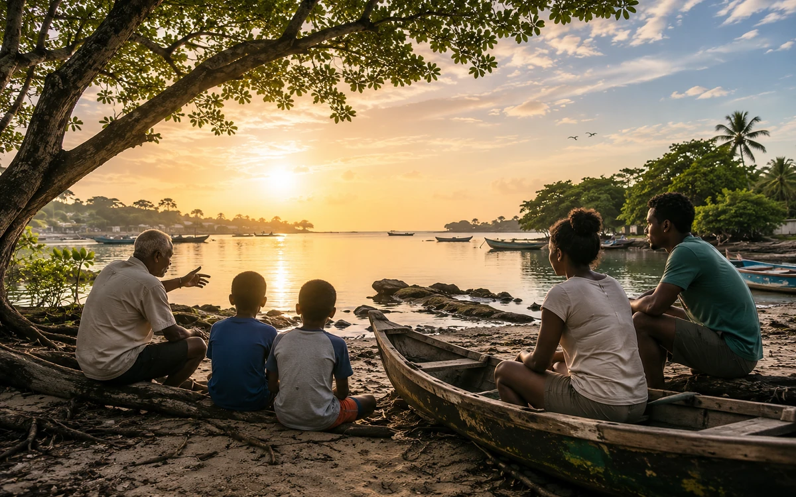
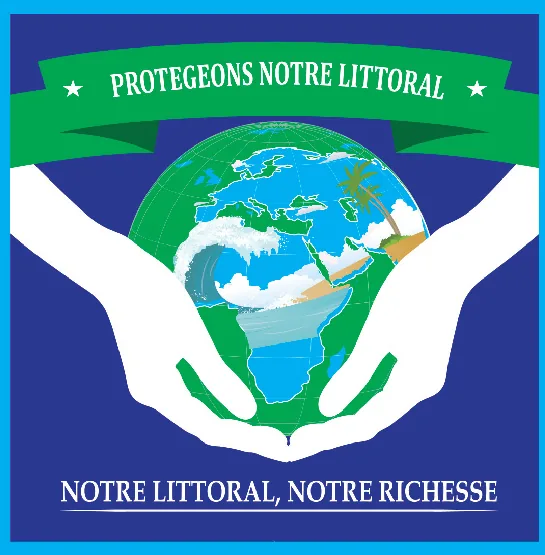

Présentation
Valoriser une mémoire publique responsable
Mémoire du Littoral aide à structurer les repères historiques, récits, documents et visuels autorisés, dans un cadre respectueux des personnes et des droits de publication.
Programme de capitalisation publique
Un programme pour valoriser l'histoire associative, les récits et les repères publics du littoral ivoirien à partir d'éléments autorisés et adaptés à une diffusion institutionnelle.
Présentation
Mémoire du Littoral aide à structurer les repères historiques, récits, documents et visuels autorisés, dans un cadre respectueux des personnes et des droits de publication.

Préserver la mémoire utile, expliquer l'origine de l'ONG et valoriser le patrimoine littoral avec responsabilité.
Membres, anciens contributeurs, jeunes, chercheurs, médias, associations et publics intéressés par l'histoire littorale.
Récits validés, repères chronologiques, documents reformulés, visuels autorisés et contenus de mémoire publique.
Notre histoire, documents institutionnels, ressources publiques et règles de transparence.
Proposer un souvenir, une référence ou un document avec les éléments utiles à son analyse éditoriale.
Les contenus de mémoire publique respectent les personnes, les autorisations et le cadre éditorial de l'ONG.
Mémoire publique
Mémoire du Littoral vise à préserver, organiser et transmettre les traces publiques utiles à la compréhension des littoraux, des lagunes, des mangroves, des mobilisations citoyennes et de l’histoire de Protégeons notre Littoral. Cette mémoire peut s’appuyer sur des photos autorisées, anciens supports, affiches, programmes d’événements, documents publics, récits et repères historiques sélectionnés.
Archives utiles
Photos sans visages identifiables ou avec autorisation claire.
Anciens supports publics, affiches, flyers et brochures compatibles avec une diffusion publique.
Documents liés au littoral, à l’océan, au climat ou à l’environnement, présentés comme repères documentaires.
Captures anciennes de présence publique en ligne et documents publics non sensibles.
Repères autour des actions, participations et sensibilisations, à documenter avant diffusion publique.
Contenus reformulés, contextualisés et adaptés au cadre éditorial de l’ONG.
Pourquoi une mémoire du littoral ?
La protection du littoral ne repose pas seulement sur l’action présente. Elle suppose aussi de conserver les traces, les récits, les supports, les documents publics et les repères qui permettent de comprendre l’évolution des territoires côtiers et l’engagement citoyen autour de leur protection.
Conservation éditoriale
Brochures, repères visuels et supports institutionnels utiles à la mémoire associative.
Visuels et images sélectionnés uniquement lorsque leur diffusion respecte les droits et les personnes.
Repères de pédagogie environnementale, de mobilisation citoyenne et de communication publique.
Éléments permettant de relier les enjeux littoraux aux territoires, lagunes et espaces côtiers.
Contenus adaptés à une diffusion publique et utiles à la transmission auprès des publics.
Traces numériques et supports publics anciens qui aident à comprendre l’évolution de l’ONG.
Cadre interne
Certains documents servent à la mémoire interne de l’ONG et ne sont pas destinés à une publication brute : listes, courriers, signatures, contacts, pièces administratives ou documents contenant des informations personnelles. Ils peuvent toutefois contribuer à reconstituer l’histoire institutionnelle, sous forme de synthèses publiques sobres et anonymisées.
Les contributions sont accompagnées d'éléments de contexte et d'une autorisation claire afin de faciliter leur traitement éditorial.
Archives et transmission
Le programme Mémoire du Littoral rassemble progressivement les traces publiques utiles à la compréhension de l’histoire de l’ONG et des enjeux littoraux : anciens supports, visuels institutionnels, affiches, captures de présence publique, photos autorisées, documents de sensibilisation et repères liés aux territoires côtiers.
Supports publics et éléments graphiques permettant de documenter l’identité de l’association.
Images et visuels sélectionnés selon leur origine, leur autorisation et leur utilité documentaire.
Repères de communication et de pédagogie environnementale liés aux enjeux littoraux.
Éléments permettant de relier la mémoire de l’ONG aux territoires côtiers et lagunaires.
Contenus publics reformulés, contextualisés et compatibles avec une diffusion institutionnelle.
Traces de présence publique utiles à la compréhension de l’histoire institutionnelle.

Extrait neutralisé d’un ancien support institutionnel, conservé comme repère d’identité historique.
Les supports anciens, lorsqu’ils sont adaptés à une diffusion publique, permettent de retracer l’évolution de l’identité, des messages et des priorités de l’ONG. Les documents contenant des contacts, signatures, logos tiers ou données personnelles sont conservés en interne ou retraités avant toute diffusion.
Dernière mise à jour : juin 2026